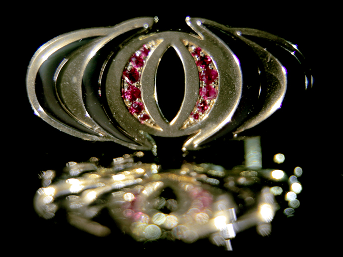
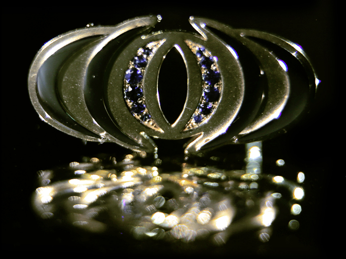

共創關懷力量
“公益拍賣會”上，“徐林之心”做為首件拍賣品便由飛馬領隊 III Andy Saw 旗開得勝以高價 SGD$250,000 標得！
第二件拍賣品“海納之心”同樣以 SGD$250,000 由飛馬領隊 III David Yeo 及飛馬領隊 III Joe Lee 標得。隨後，兩位飛馬領隊將“海納之心”贈予發展總監 Dato' Kenny Wong，以感謝他為領袖的無私奉獻與付出。
發展總監 Dato' Kenny Wong 也為慈善出一份力，將“海納之心”捐出重新進行拍賣！最終由3位核心管理團隊總監以 SGD$320,000 標下，再回贈飛馬領隊 III David Yeo。



第三件拍賣品“燃焰之心”，成功以 SGD$228,000 由來自台灣的飛馬領隊 II 邱彥豪與飛馬領隊 II 邱證修標下！並將“燃焰之心”贈予培訓總監 Ted Tan，以感謝他一路為台灣領袖的付出。
當大家以為拍賣會進入尾聲之際，執行總監林汶鋒博士卻將“力匯之心”再次拿出進行拍賣，並以 SGD$1,000,000 重新標下這枚徽章，將“公益拍賣會”總額推至 SGD$2,048,000，打破以往記錄！感謝所有領袖的參與，我們因為你們更精彩，社會因為你們更充滿愛！